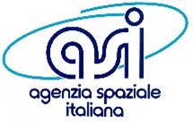
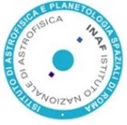
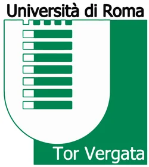
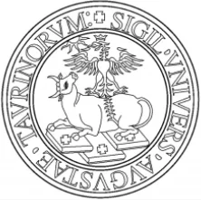
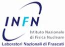
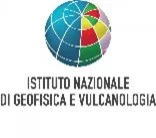
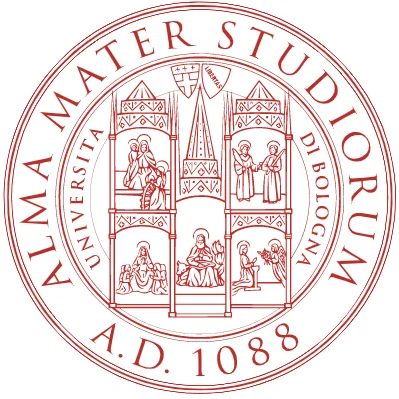
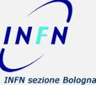
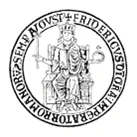
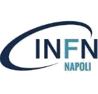

Heritage
I-Conomy is a spin-off company of Aerospazio Tecnologie that has supplied a significant number of HV modules over the years for Space, Nuclear Physics, Astrophysics and High Reliability applications.
HV3 +3000 V 150 µA and HV3 −3000 V 150 µA modules for a non-disclosed application.
62 FM modules HV3 −1200 V to supply phototubes, 14 FM High Voltage Dividers and 12 FM modules HV3 +150 V to supply Silicon APDs for the Limadou experiment hosted on board CSES-01, launched from the Jiuquan Satellite Launch Center, China.
Chinese Collaboration
Italian Collaboration










Video of the launch of CSES-01 satellite, Jiuquan Satellite Launch Center, China (in orbit on CSES satellite since 2 Feb. 2018) — Credits: China Central Television
80 HV modules FM that will supply phototubes on board the Chinese CSES-02 satellite.
Fabry–Pérot interferometer piezoelectric actuators power supply system for IBIS2. Set of three four-quadrant fast and very low noise HV systems ranging from −700 V to +700 V for capacitive loads up to 25 nF.